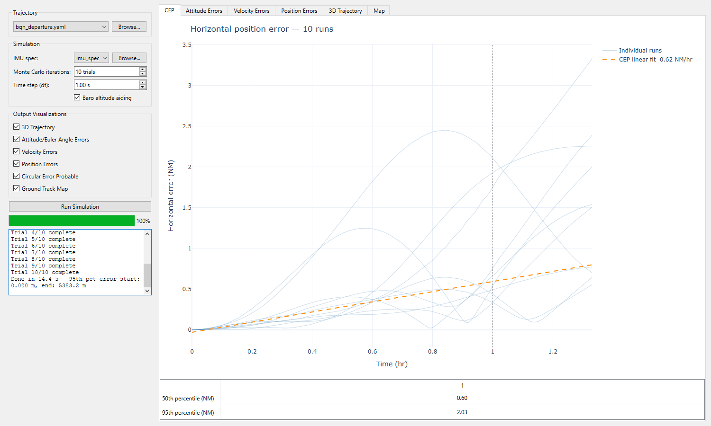
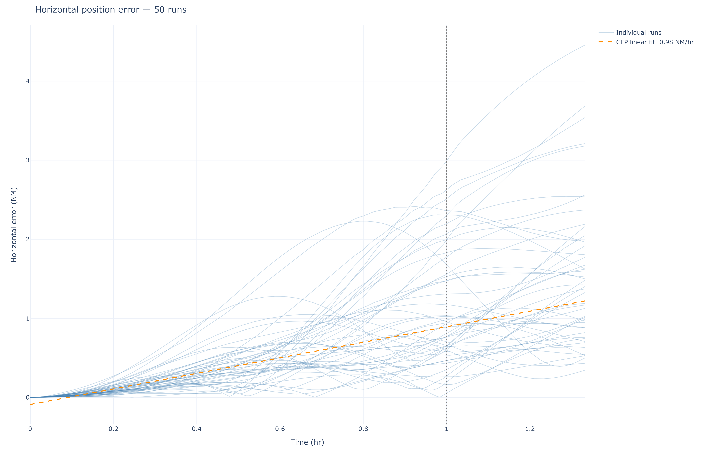

User Guide
This guide walks through operating the desktop app, interpreting each visualization, and authoring your own mission and IMU configuration files.
Running your first simulation

- Select a trajectory. The Trajectory combo lists the mission YAMLs
packaged with the app (
bqn_departure.yamlby default). Browse… adds any external mission file; the app validates that it has the expected trajectory structure (a top-levelphaseslist) before accepting it. - Select an IMU spec. Same pattern: the packaged navigation-grade spec
(
imu_spec.yaml) by default, or Browse… for your own (validated for top-levelgyroandaccelsections). - Set the ensemble size. Monte Carlo iterations (default 50) trades statistical confidence against run time — ensemble statistics converge as \(1/\sqrt{N}\), so quadrupling the trials halves the noise on the percentile curves.
- Set the time step. Time step (dt) (default 0.1 s) is the truth and integration sample interval. 0.1 s is the reference setting; 0.5–1.0 s runs much faster and is fine for quick looks at long-duration error growth.
- Choose the vertical channel. Baro altitude aiding (checked by default) runs the third-order baro-damped vertical loop. Uncheck it to see the free-inertial vertical channel diverge — the instability is real physics, not a bug (see Theory & Math).
- Pick visualizations. Each checked box becomes one tab after the run.
- Run. The simulation executes on a background thread — the log pane streams progress (per-trial completion, timing, final 95th-percentile error) and the progress bar tracks the ensemble. The UI stays responsive throughout; controls re-enable when the run finishes.
Reading the results
Every tab is an interactive plotly page — hover for values, drag to zoom, double-click to reset.
CEP (Circular Error Probable) — every trial's horizontal error in nautical miles against decimal hours, with the ensemble CEP drift-rate fit (fitted to the pointwise 50th percentile over the first hour). Below the plot, a table lists the 50th and 95th percentile error at each whole hour.

Attitude / Velocity / Position Errors — per-axis ensemble mean error with ±3σ bands. Attitude panels are pitch/roll/heading in degrees (heading wrapped); velocity and position are North/East/Down. With baro aiding on, the Down channels stay bounded while North/East grow with the classic INS error signature; with aiding off, watch the Down channels run away.
3D Trajectory — the truth track (black), every trial's estimated track (steel blue), and the crimson swept tube of the 95th-percentile radial error.
Ground Track Map — the mission over OpenStreetMap tiles with the 95th-percentile horizontal-error envelope drawn perpendicular to the track and 5-minute markers along the truth path. The basemap tiles are the only part of the app that needs an internet connection.
Writing mission profiles
A mission YAML has three top-level sections — departure, simulation_time,
and phases. All angles are degrees, altitudes feet, speeds knots (or Mach);
everything is converted to SI internally.
name: My Mission
departure:
lat_deg: 18.4949 # start latitude
lon_deg: -67.1294 # start longitude
alt_ft: 237.0 # field elevation (MSL)
nav_bank_angle_deg: 25.0 # bank angle used for inter-waypoint turns
simulation_time:
dt_s: 0.1 # sample rate hint (GUI/CLI dt overrides it)
phases:
- type: ground_roll
...
Phases execute in order; each starts from the state the previous one left (position, speed, heading, altitude).
Phase type |
Keys | Behavior |
|---|---|---|
ground_roll |
heading_deg, run_length_m, speed_final_kt |
Accelerates along the runway heading over the given ground run. |
takeoff |
heading_deg, pitch_deg, speed_kt, duration_s |
Rotates and climbs out at the given pitch and speed. |
climb |
pitch_deg, speed_kt, to_altitude_ft |
Climbs at constant pitch/speed until reaching the target altitude. |
waypoint |
lat_deg, lon_deg, alt_ft, speed_kt (optional), loiter (optional) |
Flies a great-circle-style leg to the fix, turning at the departure-block bank angle. If speed_kt is omitted the leg inherits the current speed — e.g. a sprint leg flown at the Mach set by a preceding speed_ramp. |
speed_ramp |
speed_end_kt or speed_end_mach, duration_s |
Linear acceleration/deceleration to the target speed. speed_end_mach converts via the ISA sound speed at the current altitude. |
The optional loiter block on a waypoint flies constant-bank circles on
arrival:
loiter:
n_turns: 5
bank_angle_deg: 30.0
direction: right # or left; default right
Writing IMU specifications
An IMU YAML has gyro, accel, and optional alignment sections, all in
conventional datasheet units; load_imu_spec converts to SI at load time.
name: Navigation-Grade RLG INS
gyro:
arw_deg_per_rt_hr: 0.002 # Angular Random Walk [°/√hr]
bias_instab_deg_per_hr: 0.01 # Bias instability (GM 1σ) [°/hr]
bias_tau_s: 3600.0 # GM correlation time [s]
repeatability_deg_per_hr: 0.01 # Turn-on bias repeatability 1σ [°/hr]
scale_factor_ppm: 5.0 # Scale-factor error 1σ per axis [ppm]
misalignment_urad: 50.0 # Axis misalignment 1σ per element [µrad]
accel:
vrw_m_per_s_per_rt_hr: 0.005 # Velocity Random Walk [m/s/√hr]
bias_instab_ug: 5.0 # Bias instability (GM 1σ) [µg]
bias_tau_s: 3600.0 # GM correlation time [s]
repeatability_ug: 25.0 # Turn-on bias repeatability 1σ [µg]
scale_factor_ppm: 100.0 # Scale-factor error 1σ per axis [ppm]
misalignment_urad: 50.0 # Axis misalignment 1σ per element [µrad]
alignment:
tilt_std_deg: 0.0015 # initial N/E tilt error 1σ [°]
heading_std_deg: 0.04 # initial azimuth error 1σ [°]
| Key | Physical meaning |
|---|---|
arw_deg_per_rt_hr / vrw_m_per_s_per_rt_hr |
White-noise density. Integrated angle (velocity) uncertainty grows as ARW·√t (VRW·√t). |
bias_instab_* + bias_tau_s |
In-run bias drift, modeled as a first-order Gauss-Markov process with the given steady-state 1σ and correlation time. |
repeatability_* |
Turn-on bias: a constant offset drawn once per trial. |
scale_factor_ppm |
Per-axis multiplicative error, drawn once per trial. |
misalignment_urad |
Sensor-triad axis misalignment, six independent small angles drawn once per trial. |
alignment: block |
Residual error of a stationary gyrocompass alignment, applied to the initial attitude of each trial. Physically, tilt ≈ accel repeatability / g and heading ≈ east-gyro repeatability / (Ωie cos φ) — the packaged 0.04° corresponds to 0.01 °/hr at ≈18.5° N. |
scale_factor_ppm, misalignment_urad, and the alignment block are
optional and default to zero (exact passthrough), so minimal diagnostic specs
stay valid.
Scripted workflows
The GUI and CLI drive the same engine. Headless run with the bundled defaults, or any custom files:
python main.py --config path/to/mission.yaml --imu-spec path/to/imu.yaml \
--trials 100 --dt 0.1 --seed 7
Or call the pipeline directly from Python:
from ins_sim.trajectory.kinematics import build_trajectory
from ins_sim.sensors.imu import load_imu_spec
from ins_sim.evaluation.monte_carlo import run_monte_carlo, percentile_envelope
truth, v_sprint, R_turn = build_trajectory("mission.yaml", dt=0.1)
spec = load_imu_spec("imu_spec.yaml")
pos_runs, euler_runs, lat_runs, lon_runs, vel_runs = run_monte_carlo(
truth, spec, n_trials=100, seed=7, baro_aiding=True)
r95 = percentile_envelope(pos_runs, truth.pos_n, q=95)
The documentation figures on this site are produced by exactly this pipeline
— see tools/generate_doc_plots.py in the repository.